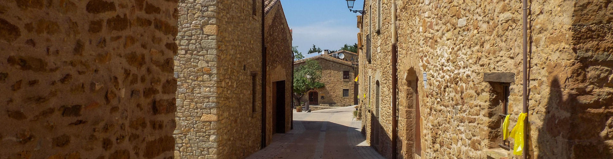

Ruta · Montgrí
La segona etapa de la Ruta del Montgrí i el Baix Ter surt de la plaça del Lledoner de la població de Torroella de Montgrí , punt d’arribada o sortida compartit amb les altres etapes, per dur-nos…